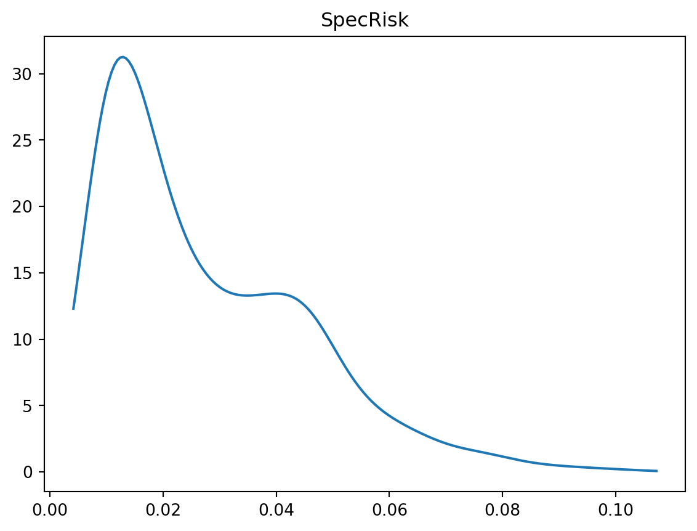

import pandas as pd
import numpy as np
import matplotlib.pyplot as plt
from statsmodels.formula.api import ols
from scipy.stats import gaussian_kde
import scipy
import scipy.sparse
import patsy
from statistics import median
import bz2
import mathCleaning the data
Importing
def sort_cols(test):
return(test.reindex(sorted(test.columns), axis=1))
# Assuming model is in the same directory as the python file
# update data from 2003 to 2010
frames = {}
for year in [2003,2004, 2005, 2006,2007,2008,2009,2010]:
fil = "pickle_data/FACTOR_MODEL/" + "pandas-frames." + str(year) + ".pickle.bz2"
frames.update(pd.read_pickle(fil))
for x in frames:
frames[x] = sort_cols(frames[x])
# Assuming model is in the same directory as the python file
# update data from 2003 to 2010
covariance = {}
for year in [2003,2004, 2005, 2006,2007,2008,2009,2010]:
fil = "pickle_data/FACTOR_MODEL/" + "covariance." + str(year) + ".pickle.bz2"
covariance.update(pd.read_pickle(fil))
frames["20040102"]| 1DREVRSL | AERODEF | AIRLINES | ALUMSTEL | APPAREL | AUTO | BANKS | BETA | BEVTOB | BIOLIFE | ... | SPTYSTOR | STREVRSL | SpecRisk | TELECOM | TRADECO | TRANSPRT | TotalRisk | VALUE | WIRELESS | Yield | |
|---|---|---|---|---|---|---|---|---|---|---|---|---|---|---|---|---|---|---|---|---|---|
| 0 | -0.032 | 0.0 | 0.0 | 0.0 | 0.0 | 0.0 | 0.00 | -2.177 | 0.0 | 0.0 | ... | 0.0 | 0.548 | 9.014505 | 0.054 | 0.0 | 0.0 | 13.959397 | 0.644 | 0.0 | 0.188679 |
| 1 | 0.684 | 0.0 | 0.0 | 0.0 | 0.0 | 0.0 | 0.00 | -2.045 | 0.0 | 0.0 | ... | 0.0 | 0.986 | 19.304651 | 0.000 | 0.0 | 0.0 | 23.393503 | -0.700 | 0.0 | 3.203463 |
| 2 | 0.235 | 0.0 | 0.0 | 0.0 | 0.0 | 0.0 | 0.00 | -2.010 | 0.0 | 0.0 | ... | 0.0 | -0.256 | 19.802556 | 0.000 | 0.0 | 0.0 | 22.135724 | 0.513 | 0.0 | 1.290796 |
| 3 | 0.759 | 0.0 | 0.0 | 0.0 | 0.0 | 0.0 | 0.00 | -0.948 | 0.0 | 0.0 | ... | 0.0 | 1.841 | 31.274403 | 0.000 | 0.0 | 0.0 | 35.785120 | 0.609 | 0.0 | NaN |
| 4 | 0.674 | 0.0 | 0.0 | 0.0 | 0.0 | 0.0 | 0.00 | -2.148 | 0.0 | 0.0 | ... | 0.0 | -0.588 | 13.533480 | 0.000 | 0.0 | 0.0 | 18.928129 | 2.986 | 0.0 | 0.000000 |
| ... | ... | ... | ... | ... | ... | ... | ... | ... | ... | ... | ... | ... | ... | ... | ... | ... | ... | ... | ... | ... | ... |
| 12430 | -0.953 | 0.0 | 0.0 | 0.0 | 0.0 | 0.0 | 0.97 | -2.009 | 0.0 | 0.0 | ... | 0.0 | 0.430 | 9.095567 | 0.000 | 0.0 | 0.0 | 13.125982 | 0.928 | 0.0 | 2.770352 |
| 12431 | -0.808 | 0.0 | 0.0 | 0.0 | 0.0 | 0.0 | 0.97 | -2.066 | 0.0 | 0.0 | ... | 0.0 | 0.561 | 8.739695 | 0.000 | 0.0 | 0.0 | 12.888183 | 0.966 | 0.0 | 7.175297 |
| 12432 | -0.754 | 0.0 | 0.0 | 0.0 | 0.0 | 0.0 | 0.97 | -2.053 | 0.0 | 0.0 | ... | 0.0 | 0.734 | 9.565838 | 0.000 | 0.0 | 0.0 | 13.436052 | 0.818 | 0.0 | 2.770352 |
| 12433 | -0.647 | 0.0 | 0.0 | 0.0 | 0.0 | 0.0 | 0.97 | -2.022 | 0.0 | 0.0 | ... | 0.0 | 0.680 | 9.394557 | 0.000 | 0.0 | 0.0 | 13.256003 | 0.774 | 0.0 | 2.770352 |
| 12434 | 0.331 | 0.0 | 0.0 | 0.0 | 0.0 | 0.0 | 0.00 | -1.985 | 0.0 | 0.0 | ... | 0.0 | -0.519 | 9.591641 | 0.000 | 0.0 | 0.0 | 12.277461 | 0.316 | 0.0 | 4.148421 |
12435 rows × 93 columns
Data Cleaning and Winsorization
The distribution of many statistics can be heavily influenced by outliers. A simple approach to robustifying parameter estimation procedures is to set all outliers to a specified percentile of the data; for example, a 90% winsorization would see all data below the 5th percentile set to the 5th percentile, and data above the 95th percentile set to the 95th percentile. Winsorized estimators are usually more robust to outliers than their more standard forms.
def wins(x, a, b):
return(np.where(x <= a, a, np.where(x >= b, b, x)))
def clean_nas(df):
numeric_columns = df.select_dtypes(include=[np.number]).columns.tolist()
for numeric_column in numeric_columns:
df[numeric_column] = np.nan_to_num(df[numeric_column])
return dfDensity Polt
def density_plot(data, title):
density = gaussian_kde(data)
xs = np.linspace(np.min(data), np.max(data), 200)
density.covariance_factor = lambda: .25
density._compute_covariance()
plt.plot(xs, density(xs))
plt.title(title)
plt.show()
test = frames['20040102']
density_plot(test['Ret'], 'Daily return pre-winsorization')
density_plot(wins(test['Ret'], -0.25, 0.25), 'Daily return winsorized')
density_plot(test['SpecRisk'] / (100 * math.sqrt(252)), 'SpecRisk')


Data Definitions
- ID: a unique identifier that can be used to link stocks across time
- 1DREVRSL: very short-term reversal, potential alpha factor but probably too fast- moving to be tradable
- STREVRSL: short-term reversal, potential alpha factor
- LTREVRSL: long-term reversal, potential alpha factor
- BETA: risk factor computed from CAPM beta regression
- EARNQLTY: earnings quality, potential alpha factor
- EARNYILD: earnings yield (blend of forecasted earnings and historical earnings divided by market cap)
- GROWTH: mix of historical and forecasted earnings growth
- LEVERAGE: financial leverage of the company’s balance sheet, usually a risk factor
- LIQUIDTY: factor with high loadings for very liquidly traded names; usually a risk factor
- MGMTQLTY: management quality, potential alpha factor which looks at quantitative measures of how well-run a company is by its management
- MOMENTUM: 12-month growth in stock price, usually a risk factor
- PROFIT: profitability, potential alpha factor
- PROSPECT: based on skewness of the return distribution, potential risk factor RESVOL: risk factor computed from residual volatility
- SEASON: seasonality-based alpha factor
- SENTMT: news sentiment alpha factor
- SIZE: risk factor based on log(market capitalization)
- VALUE: risk factor based on ratio of tangible book value to current price
- SpecRisk: specific risk is another name for predicted residual volatility. We called this the D matrix in our discussion of APT models.
- TotalRisk: predicted total vol, including factor and idiosyncratic contributions, annualized
- Ret: asset’s total return on the next day after the factor loadings are known, suitable as the Y vector in a regression analysis
- Yield: the dividend yield of the asset
- HistBeta: historically estimated CAPM beta coefficient PredBeta: model-predicted beta coefficient in the future
- INDMOM: industry momentum (defined as relative historical outperformance or underperformance of the other stocks in the same industry)
- IssuerMarketCap: aggregate market capitalization of the company (all share classes from the same issuer, e.g. for Google would include both Alphabet A and C)
- BidAskSpread: bid-offer spread (average for the day)
- CompositeVolume: composite trading volume for the day
- DataDate: the date when the data would have been known, as of the close
Many of the remaining columns are industry factors, of which a full list is given below.
industry_factors = ['AERODEF', 'AIRLINES', 'ALUMSTEL', 'APPAREL', 'AUTO', 'BANKS', 'BEVTOB',
'BIOLIFE', 'BLDGPROD', 'CHEM', 'CNSTENG', 'CNSTMACH', 'CNSTMATL', 'COMMEQP', 'COMPELEC',
'COMSVCS', 'CONGLOM', 'CONTAINR', 'DISTRIB', 'DIVFIN', 'ELECEQP', 'ELECUTIL', 'FOODPROD',
'FOODRET', 'GASUTIL', 'HLTHEQP', 'HLTHSVCS', 'HOMEBLDG', 'HOUSEDUR', 'INDMACH', 'INSURNCE',
'LEISPROD', 'LEISSVCS', 'LIFEINS', 'MEDIA', 'MGDHLTH', 'MULTUTIL', 'OILGSCON', 'OILGSDRL',
'OILGSEQP', 'OILGSEXP', 'PAPER', 'PHARMA', 'PRECMTLS', 'PSNLPROD', 'REALEST', 'RESTAUR',
'ROADRAIL', 'SEMICOND', 'SEMIEQP', 'SOFTWARE', 'SPLTYRET', 'SPTYCHEM', 'SPTYSTOR', 'TELECOM',
'TRADECO', 'TRANSPRT', 'WIRELESS']
style_factors = ['BETA', 'SIZE', 'MOMENTUM', 'VALUE']
def get_formula(alpha):
L = ["0", alpha]
L.extend(style_factors)
L.extend(industry_factors)
return "Ret ~ " + " + ".join(L)To solve Problem 1, we need to create a function named estimate_factor_returns that performs several key tasks:
Filter the Data: The function should first filter the input dataframe df to include only rows where IssuerMarketCap > 1e9. This step ensures that the analysis focuses on liquid stocks.
Winsorize the Return: The function should apply the winsorization process to the ‘Ret’ column of the dataframe. This step will mitigate the impact of outliers in the data.
Run OLS Regression: Using the formula generated by get_formula function with the provided alpha factor, the function should perform an Ordinary Least Squares (OLS) regression. The dependent variable in this regression will be the winsorized return.
Return Results: The function should return the slope coefficients from the regression, and it can also return additional information from the regression results if desired.
structural exposures - Security analysts coeff - optimisation
problem 1
Write a function called “estimate_factor_returns” which takes as arguments, an alpha factor name, and an input data frame “df”. The function must not modify the contents of the data frame. The function will first subset to IssuerMarketCap > 1e9 to obtain a liquid universe, and then run an OLS regression using the formula returned by the get_formula function defined above. The dependent variable in the regression must be winsorized return, using the winsorisation procedure discussed above in this notebook. The estimate_factor_returns function should return an object which, at very least, contains the slope coefficients from the regression, and may contain other information.
import pandas as pd
import numpy as np
import statsmodels.formula.api as smf
def estimate_factor_returns(alpha, df):
# Filtering data for IssuerMarketCap > 1e9
filtered_df = df[df['IssuerMarketCap'] > 1e9]
# Winsorizing the 'Ret' column
winsorized_ret = wins(filtered_df['Ret'], -0.25, 0.25) # ret is return
# Running OLS regression
formula = get_formula(alpha)
model = smf.ols(formula, data=filtered_df.assign(Ret=winsorized_ret)).fit()
# Returning the slope coefficients and optionally other information
return model.params
# Example usage
alpha_factor_name = 'PROFIT'
df = frames["20030103"]
results = estimate_factor_returns(alpha_factor_name, df)
print(results)PROFIT -0.000699
BETA -0.000370
SIZE -0.001563
MOMENTUM -0.001272
VALUE -0.000369
...
SPTYSTOR -0.004445
TELECOM -0.011490
TRADECO -0.000577
TRANSPRT -0.006902
WIRELESS 0.003033
Length: 63, dtype: float64- wins is the previously defined function for winsorization.
- get_formula is the function provided in your notebook that generates the formula for the regression.
- The dataframe df is expected to include all the necessary columns like ‘IssuerMarketCap’, ‘Ret’, and any columns relevant to the alpha factor and style/industry factors.
problem 2
Write a function which iteratively calls estimate_factor_returns on every data frame in the dictionary called “frames” above, and returns a univariate time series containing the coefficient on the alpha factor for each date. Since only the alpha factor return is saved, style and industry factor returns are discarded by this procedure.
def iteratively_call_estimate_factor_return(frames, alpha_factors):
# DataFrame to store alpha factors and their corresponding time series
all_alpha_factor_returns = pd.DataFrame(index=frames.keys())
# Iterate through each date and DataFrame in the frames dictionary
for date, df in frames.items():
for alpha in alpha_factors:
# Call the estimate_factor_returns function for each alpha factor
factor_returns = estimate_factor_returns(alpha, df)
# Extract the alpha factor return and store it with the corresponding date
all_alpha_factor_returns.loc[date, alpha] = factor_returns.get(alpha, np.nan)
return all_alpha_factor_returns
# Example usage
alpha_factors = ['STREVRSL', 'PROFIT', 'SENTMT']
alpha_time_series_df = iteratively_call_estimate_factor_return(frames, alpha_factors)problem 3
For each of the potential alpha factors STREVRSL, PROFIT, SENTMT, run the function created in Problem 2 and plot the cumulative sum of the resulting time series. Do any of these qualify as potential alpha factors? Do the cumulative returns from the plot represent returns on any tradable assets or portfolios?
plt.plot(pd.Series(alpha_time_series_df["STREVRSL"]).cumsum(), label="STREVRSL")
plt.plot(pd.Series(alpha_time_series_df["PROFIT"]).cumsum(), label="PROFIT")
plt.plot(pd.Series(alpha_time_series_df["SENTMT"]).cumsum(), label="SENTMT")
plt.title("Cumulative Returns of Potential Alpha Factors")
plt.xlabel("Date")
plt.ylabel("Cumulative Returns")
plt.legend()
plt.xticks(rotation=45)
plt.xticks(np.arange(0, len(alpha_time_series_df.index), 50), alpha_time_series_df.index[np.arange(0, len(alpha_time_series_df.index), 50)])
plt.show()
An alpha factor is a variable or set of variables that a model uses to predict stock returns. To qualify as a potential alpha factor, a variable should ideally show a consistent ability to generate excess returns over a benchmark.
STREVRSL shows a steep upward trend, which suggests that this factor might have been predictive of positive returns over the period shown. If these returns are risk-adjusted and beat a benchmark, STREVRSL could be considered a strong alpha factor.
PROFIT and SENTMT exhibit a more modest upward trajectory. This suggests that while they may have some predictive power, their ability to generate excess returns isn’t as pronounced as STREVRSL within the time frame of the data.
Part 4: Do the cumulative returns from the plot represent returns on any tradable assets or portfolios? The cumulative returns plotted for these alpha factors represent theoretical returns based on a model’s predictions. They are not directly the returns of tradable assets but indicate how an investment strategy based on these factors might have performed. To translate these into actual tradable strategies:
The factors would need to be a part of a trading model that determines how much to invest in different assets.
The model would adjust its positions regularly based on updated factor scores and predictions.
Transaction costs, slippage, market impact, and other real-world trading constraints would affect the actual returns realized.
The model’s predictions would need to be converted into portfolio weights, and these weights would then be used to construct a portfolio of stocks or other assets.
The plotted cumulative returns suggest how a strategy solely based on these alpha factors might have accumulated gains over time, but translating these theoretical returns into actual tradable strategies requires a comprehensive investment model and consideration of trading costs and constraints. If the factors are robust and continue to perform well out-of-sample (i.e., in future unseen data), they might be incorporated into real trading strategies or investment portfolios.